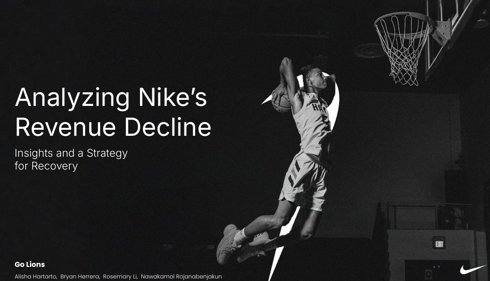

Business Analytics · Customer Sentiment · Competitive Strategy
A team analysis diagnosing why Nike's financial momentum broke down in 2025 — and what newer brands like HOKA and On Running are doing differently.

Team Go Lions — Alisha Hartarto, Bryan Herrera, Rosemary Li, Nawakamol Rojanabenjakun
Goal
Nike's revenue grew steadily for years — then suddenly fell in 2025. This project asks why, by combining financial data, customer sentiment, and competitive intelligence to find the real drivers of the decline — and what Nike should do about it.
Problem & solution
⚠ The Problem
Nike's revenue dropped from $51.4B (2024) to $46.3B (2025) and Return on Invested Capital collapsed from 48.8% to 20.2%. The cause wasn't obvious — was it product, pricing, brand, or competition? Investors lost ~70% of share value in the same window.
💡 The Solution
A multi-source diagnostic — financial filings + customer sentiment from Nike website reviews + competitive search + stock benchmarking — to isolate the real drivers and recommend a recovery strategy.
The 4-step diagnostic
Map the financial damage
Pulled Nike's 5-year revenue, ROIC, and stock performance to quantify the scale of the breakdown — revenue down 9.8% YoY, ROIC cut by more than half, stock at multi-year lows.
Decompose the revenue mix
Broke revenue down by product line: 66% footwear, 29% apparel, 5% equipment — exposing dangerous category concentration in a softening sneaker market.
Listen to the customer
Scraped Nike's website reviews to extract negative sentiment themes — recurring complaints about quality drop, sizing inconsistency, and price-vs-value gap.
Benchmark vs competitors
Compared search popularity (Google Trends) and 5-year CAGR for Nike, Adidas, HOKA, and On Holdings — uncovering the comfort/lifestyle shift Nike missed.
→ From "revenue dropped" to "here's exactly why and what to do"
Three lenses on the decline
⚠ Concentration
Revenue Mix Risk
66% footwear
Footwear made up 66% of FY25 revenue, with apparel at 29% and equipment at 5%. When sneaker demand cooled, two-thirds of the business cooled with it.
💬 Voice of Customer
Sentiment Mining
Reviews scraped
Negative review themes from Nike's site: declining quality on flagship lines (Jordan), sizing running small, and price-vs-value mismatch — eroding the premium brand promise.
📈 Competition
Competitive Benchmark
CAGR gap exposed
5-year CAGR (2020-2024): On Holdings 55%, HOKA 19%, Nike 8%, Adidas 5%. Younger comfort/lifestyle brands took the share Nike missed.
Results · headline numbers
Nike's decline is driven by over-reliance on footwear, brand fatigue, and quality complaints — while younger brands captured the comfort and lifestyle shift. The diagnosis points to three strategic responses: Innovation, Product Diversification, and Strategic Partnerships.
Strategic recommendations
How it works — technical overview
Financial Data
Public Filings
Revenue, ROIC, FY 2021-2025 · stock price history 2020-2025
Sentiment
Review Scraping
Customer reviews from nike.com · negative theme extraction · ratings analysis
Competition
Trends + Stock
Google Trends search popularity · 5-year CAGR · Nike vs Adidas vs HOKA vs On
Output ✦
Tableau Diagnostic
Synthesis dashboard · 3 strategic recommendations · executive summary
| Source | Signal | Period | Role in diagnosis |
|---|---|---|---|
| Nike financial filings | Revenue, ROIC, stock | FY 2021–2025 | Damage assessment |
| Nike.com reviews | Customer sentiment, ratings, themes | Recent | Voice of customer |
| Google Trends | Search popularity (Nike, Adidas, HOKA, On) | 2020–2025 | Brand momentum |
| Stock data | Price + CAGR vs competitors | 2020–2025 | Investor confidence |
Tech stack
Links